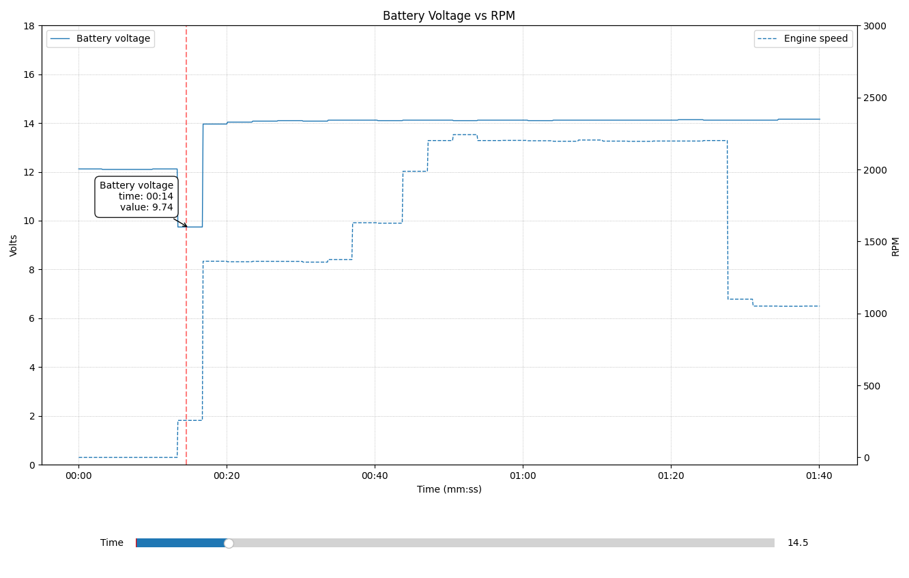

Battery Voltage Chart
The Battery Voltage quick chart displays voltage levels throughout the snapshot, making it easy to identify potential electrical issues during different engine operating states.

Reading the Chart
The battery voltage chart shows voltage on the Y-axis and time (frames) on the X-axis. Look for distinct voltage levels that correspond to different engine states:
Engine Off
When the engine is off, battery voltage should be stable at the resting voltage level. A healthy battery typically shows:
- 12.4V - 12.8V - Fully charged battery at rest
- Below 12.0V - Battery may be discharged or weak
Cranking
During engine cranking, voltage drops significantly as the starter motor draws heavy current. This is visible as a sharp dip in the chart.
- 9.0V - 10.5V - Normal cranking voltage range
- Below 9.0V - Voltage too low during cranking
- 6V - Voltage too low for fuel delivery from ECU (V1 Delphi)
Important: Bobcat machines do not typically start when battery voltage falls below 9 volts during cranking.
If the chart shows voltage dropping below 9V during the cranking period, this may indicate a weak battery,
poor connections, or excessive starter draw that could cause starting problems or ECU issues.
Idle / Running
Once the engine is running, the alternator charges the battery and voltage should rise and stabilize:
- 13.5V - 14.5V - Normal charging voltage while running
- Below 13.0V - Alternator may not be charging properly
- Above 15.0V - Possible overcharging condition
Typical Engine Speeds
This is also a nice chart for checking engine cranking speed
- Minimum for fuel delivery - 54 RPM
- Cold engine (0F) - 110-115 RPM
- Typical when warm - 250-300 RPM
- Drive belt removed - 350+ RPM
Identifying Problems
Use the chart to spot these common issues:
- Deep voltage dip during cranking - Weak battery or high resistance connections
- Low voltage while running - Alternator or charging system issue
- Voltage fluctuations - Loose connections or intermittent electrical problems
- Gradual voltage decline - Battery not holding charge or parasitic drain
- Engine speed very low - Engine must reach a minimum of 54 RPM before fuel is injected
Tips
- Use the Vertical Cursor tool to align readings across the cranking event
- Use the Values tool to see exact voltage readings at any point
- Zoom into the cranking period to get a detailed view of the voltage dip